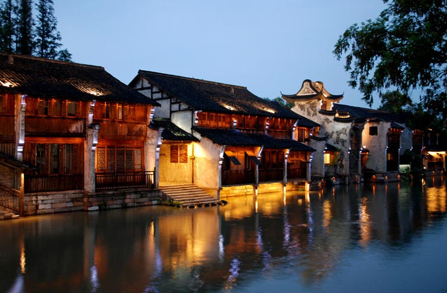

音乐是很好的朋友。狂喜、愤怒、平静、欣慰……每一种情绪都能找到与之相匹配的音乐。难过时在嘈杂的KTV拿着麦克尽情的宣泄内心的节奏，晴朗的天气走在回家的路上不自觉的就哼出了轻快的调调。更多的时候我们喜欢平静舒缓的节奏，不怎么华丽的歌词、简单的配乐，经过简单、纯粹嗓音的表达，轻轻的击中我们的内心，那便是民谣。
民谣是“我在双手合十的晚上渴望一双翅膀”，也是“夜里唱过古兰经，做过忏悔”，还是“南方姑娘，你是否爱上了北方”……但是！南方不只有姑娘，那还有一个于小处精致的美好世界。万物萌动的春天，南方走起！
“江南好，风景旧曾谙。日出江花红胜火，春来江水绿如蓝。能不忆江南？”“春未老，风细柳斜斜。试上超然台上看，半壕春水一城花，烟雨暗千家。”杏花微雨的江南成为文人墨客笔下精彩绝妙的诗句、美轮美奂的画卷。乌镇便是那永远的江南。
乌镇可参观的标准景点有22个，其他附属景点有10多个。游览乌镇主要在乌镇的夜、乌镇的晨，春日的乌镇有着其他季节无法比拟的美。
有人说“如果说圣洁的西藏是一个可以让人的心灵回复平静的地方，那么多彩的云南则一定可以让人重新燃起对生活的向往”。云南是个最丰富多彩的地方，不要以为在丽江古镇走一走、 在洱海边拍个照，就真的到过云南了 。今天，小编就安利你几个“不走寻常路”的小众景致！
元阳梯田位于云南省元阳县的哀牢山南部，是哈尼族人世世代代留下的杰作。梯田规模宏大、气势磅礴，绵延整个红河南岸。“如果你是一位风光摄影师，不到元阳，上帝也会为你悲哀”。这句在摄影界颇为流行的一句话已经足以说明元阳梯田的魅力。
听过秋裤男神李健那首冒着仙气儿的《抚仙湖》吗？孕育男神女神气质的抚仙湖就在云南哦！不要再只知道泸沽湖了，抚仙湖也是云南最好的湖泊之一，湖水煮开即可饮用。想象着划一只小舟，漂在清澈的湖水上晒太阳，感（jia）觉（zhuang）秋裤男神在自己身边！
1、篇幅有限，能安利的景点也有限（其实是被大boss派去调戏程序员了），南方美景安利到此，剩下的自己去发现吧；
2、现在起安排行程，在文中两处景点有望偶遇小编哟！